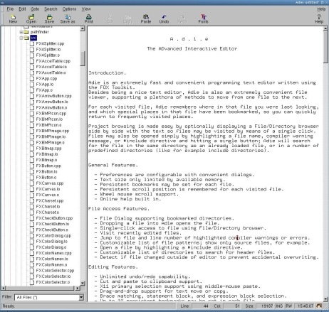

News
Download
Goals & Approach
Documentation
FAQ
FXRex
Screenshots
Adie
PathFinder
FOX Calculator
Projects
FXPy
FXRuby
EiffelFox
The FOX Hole
Japanese Docs


|  |
Latest Version: 1.0 Release Date: October, 2001 Author: Jeroen van der Zijp License: GPL Supported Platforms: Linux, Unix, Windows 95/98/ME/NT/2000 Introduction General Features File Access Features Editing Features Starting a New Document. Opening and Saving Files the Old Fashioned Way. Opening Files Using the File/Directory Browser. Opening Recently Visited Files. Opening Files by Drag and Drop. Opening a Selected Filename Mouse Selection. Scrolling Text. The Clipboard. The Primary Selection. Text Drag and Drop. Undo and Redo. Keyboard Bindings. Changing Font. Changing Colors. Changing Preferences. Changing Editor Settings. Changing File Patterns. Changing Delimiters. Other Configuration Issues. Download |
Introduction.
Besides being a nice text editor, Adie is also an extremely convenient file viewer, supporting a plethora of methods to move from one file to the next.
For each visited file, Adie remembers where in that file you were last looking, and which special places in that file have been bookmarked, so you can quickly return to frequently visited places.
Project browsing is made easy by optionally displaying a File/Directory browser side by side with the text so files may be visited by means of a single click. Files may also be opened simply by highlighting a file name, compiler warning message, or #include directive and hitting a single button; Adie will search for the file in the same directory as an already loaded file, or in a number of predefined directories (like for example include directories).
- Preferences are configurable with convenient dialogs.
- Text size only limited by available memory.
- Persistent bookmarks may be set for each file.
- Persistent scroll position is remembered for each visited file.
- Wheel mouse scroll support.
- Online help built in.
- File Dialog supporting bookmarked directories.
- Dropping a file into Adie opens the file.
- Single-click access to file using File/Directory browser.
- Visit recently edited files.
- Jump to file and line number of highlighted compiler warnings or errors.
- Customizable list of file patterns; show only source files, for example.
- Open a file by highlighting a #include directive.
- Customizable list of directories to search for header files.
- Detect if file changed outside of editor to prevent accidental overwriting.
- Unlimited undo/redo capability.
- Cut and paste to clipboard support.
- X11 primary selection support using middle-mouse paste.
- Drag-and-drop support for text move or copy.
- Brace matching, statement block, and expression block selection.
- Up to 10 persistent bookmarks may be set in each file.
- Search and replace history is stored persistently.
- Auto-indent feature.
- Strip trailing spaces, strip carriage-returns for DOS files.
- Indent or unindent selected text; clean indentation.
- Search for highlighted text.
- Goto line number, goto highlighted line number, goto matching brace, goto begin/end of block.
- Fixed word wrap column, or continuous word wrap mode.
- Mouse wheel or right-mouse scroll support.
- Customizable word-delimiters to select words by double-clicks.
- Insert files or extract highlighted text to file.
Opening and Saving Files the Old Fashioned Way
To save a file, you can either invoke the Save or the Save As menu option. The former saves the file back to the same filename, while the latter prompts for an alternative filename.
You can quickly navigate to the desired file by typing the first few letters of the filename and then pressing Enter (Return); use Backspace to move up one directory level. Control-H moves to your home directory, Control-W moves back to the current working directory.
A nice convenience of the File Dialog is the ability to set bookmarks, so once bookmarked, you can quickly move back to a previously visited directory.
Opening Files Using the File/Directory Browser.
The pattern is can be any regular file wildcard expression such as "*.cpp". By default, the File/Directory Browser shows all files, i.e. the pattern is "*".
You can switch patterns by means of the combo box under file File Browser; additional patterns for the combo box (and File Dialog) can be specified in the Preferences Dialog.
Opening Recently Visited Files
Opening Files by Drag and Drop
Of course, the File/Directory browser supports drag and drop also, so you can also drag a file from the File/Directory browser into the Text Window.
#include "filname.h"
or:
#include <filename.h>
then Adie will search for this file in a sequence of include directories, otherwise it will search in the same directory as the currently loaded file. You can specify the list of include directories to search with the "Include Path" option. When the selected filename is of the form:
filename.cpp:177
then Adie will not only load the filename, but also jump to the given line number. If this file has already been loaded, Adie will simply jump to the given line number in the current file. This option is very useful when fixing compiler errors.
Performing a shift-click extends the selection from the last cursor location to the current one.
When selecting words, words are considered to extend from the clicked position up to a blank or word-delimiting character. The latter may depend on the programming language, and so Adie offers a way to change the set of delimiter characters.
You can of course also use the scroll bars. Because scrolling becomes awkward when dealing with large amounts of text, you can do a fine scroll or vernier-scroll by holding the shift or control keys while moving the scroll bars.
Adie can also take advantage of a wheel mouse; simply point the mouse inside the text area and use the wheel to scroll it up and down. Holding the Control-key while operating the wheel makes the scrolling go faster, by smoothly scrolling one page at a time. To scroll horizontally, simply point the mouse at the horizontal scroll bar.
In fact, any scrollable control (including the File/Directory Browser), can be scrolled by simply pointing the cursor over it and using the mouse wheel.
You can adjust the number of lines scrolled for each wheel notch by means of the Preferences dialog.
If some text has been selected in another application, then you can paste this text by placing the cursor at the right spot in your text and invoking the paste command.
Within the same text window, the drag defaults to a text-movement. You can change this to a text copy by holding down the Control key while you're dragging.
Between one text window and another, the drag defaults to a copy operation you can change this to a text movement by holding down the Shift key while dragging.
If you make a mistake, you can undo the last command, and the one before that, and so on. Having invoked undo many times, it is sometimes desirable to invoke the redo command, i.e. to perform the original editing operation again. Thus, you can move backward or forward in time.
However if, after undoing several commands, you decide edit the buffer in a different way, then you will no longer be able to redo the undone commands:- you have now taken a different path.
When you first load a file, or just after you save it, Adie remembers that this version of the text was special; while subsequent editing commands can be undone individually, you can always quickly return to this special version of the text by means of the revert command.
| Key | Action |
|---|---|
| Shift+Up | Move cursor up and extend selection. |
| Down | Move cursor down. |
| Shift+Down | Move cursor down and extend selection. |
| Left | Move cursor left. |
| Shift+Left | Move cursor left and extend selection. |
| Right | Move cursor right. |
| Shift+Right | Move cursor right and extend selection. |
| Home | Move cursor to begin of line. |
| Shift+Home | Move cursor to begin of line and extend selection. |
| Ctrl+Home | Move cursor to top of text. |
| End | Move cursor to end of line. |
| Ctrl+End | Move cursor to bottom of text. |
| Shift+End | Move cursor to end of line and extend selection. |
| Page Up | Move cursor up one page. |
| Shift+Page Up | Move cursor up one page and extend selection. |
| Page Down | Move cursor down one page. |
| Shift+Page Down | Move cursor down one page and extend selection. |
| Insert | Toggle between insert mode and overstrike mode. |
| Delete | Delete character after cursor, or text selection. |
| Backspace | Delete character before cursor, or text selection. |
| Ctrl+A | Select all text. |
| Ctrl+X | Cut selected text to clipboard. |
| Ctrl+C | Copy selected text to clipboard. |
| Ctrl+V | Paste text from clipboard. |
| Ctrl+F | Search |
| Ctrl+R | Replace |
| Ctrl+O | Open |
| Ctrl+E | Open Selected |
| Ctrl+N | New |
| Ctrl+S | Save |
| Ctrl+P | |
| Ctrl+Z | Undo |
| Ctrl+Y | Redo |
| Ctrl+6 | Convert selected text to lower case |
| Shift+Ctrl+^ | Convert selected text to upper case |
| Ctrl+9 | Shift text left |
| Ctrl+0 | Shift text right |
| Ctrl+G | Goto line... |
| Ctrl+L | Goto selected text |
| Shift+Ctrl+{ | Goto { |
| Shift+Ctrl+} | Goto } |
| Shift+Ctrl+( | Goto ( |
| Shift+Ctrl+) | Goto ) |
| Ctrl+M | Goto matching (..) |
| Ctrl+Alt+0-9 | Set bookmark |
| Alt+0-9 | Goto bookmark |
| Shift+Ctrl+M | Select matching (..) |
| Shift+Alt+{ | Select block {...} |
| Shift+Alt+} | Select block {...} |
| Shift+Alt+( | Select expression (...) |
| Shift+Alt+) | Select expression (...) |
| Ctrl+H | Search selection forward |
| Shift+Ctrl+H | Search selection backward |
You can change font by invoking the Font Selection Dialog from the Font menu. The Font Dialog displays four list boxes showing the font Family, Weight, Style, and Size of each font.
You can narrow down the number of fonts displayed by selecting a specific character set, setwidth, pitch, and whether or not scalable fonts are to be listed only.
The All Fonts checkbutton causes all fonts to be listed. Use this feature if you need to select old-style X11 bitmap fonts.
The Preview window shows a sample of text in the selected font.
The colors subpane allows you to change the colors used in the File/Directory browser, and the Text Window.
You can simply drag colors from one color well to another, or you can double-click on a color well and bring up the Color Dialog.
The Color Dialog offers a number of ways to create a new color, either by selecting one of the pre-defined color wells, by mixing a custom color in RGB, HSV, or CMYK color space, or by selecting a named color from a list.
The editor subpane is used to change various modes of the editor:
- Word Wrapping
- This enables word wrapping mode for the Text Window; when word wrapping is turned on, text flowed to stay within the wrap margins.
- Fixed Wrap Margin
- When this feature is enabled, the text is flowed to stay within a fixed wrap column; when disabled, the Text Window is in continuous wrapping mode, and the text is flowed to fit the size of the Text Window. This option has no effect if the Word Wrapping option is off.
- Wrap Margin
- This specifies the column at which paragraphs are to be wrapped; the wrap margin only has effect if the fixed wrap margin option is selected.
- Tab Columns
- This specifies the tab spacing, in terms of spaces.
- Strip Carriage Returns
- When this option is selected, MS-Windows/MS-DOS text files with lines ending in CRLF are transformed into LF only files upon read; this is mostly of interest when loading DOS files on a UNIX system; when Adie runs under MS-Windows, files are normally automatically translated back and forth.
- Strip Trailing Spaces
- When selected, Adie will remove all white-space after the last printable character when reading a file.
- Auto Indent
- This causes spaces or tabs to be inserted to match the previous line; this option is meant for programmers.
- Brace Match Time
- When entering a brace, parenthesis, or bracket, the cursor temporarily jumps to the matching brace and pauses there for a bit before hopping back to the insert position. If the brace match time is set to 0, then this feature is disabled.
- Insert Tab Characters
- When this option is selected, hard tab characters are inserted when entering the tab key. If the option is not selected then entering the tab key will insert the corresponding number of spaces into the text buffer.
- Mouse Wheel Lines
- This is the number of lines scrolled when the mouse wheel is rotated by one notch. When holding the control key while using the wheel, the text scrolls by one page at a time; when holding the alt key, it scrolls one pixel at a time.
- Save View of File
- When this option is selected, the current view or scroll position is saved so that a subsequent visit to this file can immediately jump back to the same view. Disabling this option will cause all remembered views to be forgotten.
- Save Bookmarks
- When selected, all currently set bookmarks will be saved for this file; a subsequent visit to this file will restore the bookmarks. Disabling this option will cause all remembered bookmarks to be forgotten.
This subpane allows you to enter a list of file patterns, one pattern on each line. These patterns are used in the File/Directory browser and the File Dialog. They are especially useful in the File/Directory browser as it allows you to cause the File/Directory browser to only show those file types you want to see (e.g. only source files).
Each line of a pattern has the format:
patternname (patternlist)
Where patternname is the name of the pattern (e.g. "C Source") and the patternlist is a comma separated list of patterns (for example "*.h,*.c"). The patternname is optional. Some examples from my own setup of Adie are shown below:
All Files (*)
All Source (*.cpp,*.cxx,*.cc,*.C,*.c,*.hpp,*.hxx,*.hh,*.H,*.h,*.y,*.l)
C++ Source Files (*.cpp,*.cxx,*.cc,*.c,*.C)
C++ Header Files (*.h,*.hpp,*.hxx,*.hh,*.H)
C Source Files (*.c)
C Header Files (*.h)
Python Files (*.py)
Perl Files (*.pl)
Ruby Files (*.rb)
Lex (*.l)
Yacc (*.y)
Object (*.o)
X Pixmap (*.xpm)
X Bitmap (*.xbm)
Some details on the allowable wild-card patterns:
| ? | Matches single character. |
| * | Matches zero or more characters. |
| [abc] | Matches a single character, which must be a, b, or c. |
| [^abc] | Matches a single character, which must be anything other than a, b, or c. |
| [!abc] | Ditto. |
| [a-zA-Z] | Matches single character, which must be one of a-z or A-Z. |
| [^a-zA-Z] | Matches single character, which must be anything other than a-z or A-Z. |
| [!a-zA-Z] | Ditto. |
| pat1|pat2 | Matches either pat1 or pat2. |
| pat1,pat2 | Ditto. |
| (pat1|pat2) | Matches either pat1 or pat2; patterns may be nested. |
| (pat1,pat2) | Ditto. |
Different programming language have different notions about identifiers. Adie accomodates for this by allowing you to specify which characters (besides white space, of course) are used to delimit identifiers or tokens in the programming language. The default set of delimiters is "!"#$%&'()*+,-./:; <= >?@[\]^`{|}~".
[SETTINGS]
typingspeed=800
clickspeed=400
scrollspeed=80
scrolldelay=600
blinkspeed=500
animspeed=10
menupause=400
tippause=800
tiptime=3000
dragdelta=6
wheellines=1
bordercolor=black
basecolor=AntiqueWhite3
hilitecolor=AntiqueWhite
shadowcolor=AntiqueWhite4
backcolor=AntiqueWhite1
forecolor=black
selforecolor=AntiqueWhite
selbackcolor=#aea395
tipforecolor=yellow
tipbackcolor=black
normalfont="[lucidatypewriter] 90 700 1 1 0 1"
iconpath = /usr/share/icons:/home/jeroen/icons
These settings can be either placed in $HOME/.foxrc (and thus affect all FOX programs), or in $HOME/.foxrc/FoxTest/Adie (only applying to Adie). File types may be bound to a command, mime-type, and icons using statements like the one below:
[FILETYPES]
cpp = "/usr/local/bin/textedit %s &;C++ Source File;c_src.xpm;mini/c_src.xpm"
/home/jeroen = ";Home Directory;home.xpm;mini/home.xpm;application/x-folder"
defaultfilebinding = "/usr/local/bin/textedit %s &;Document;document.xpm;mini/document.xpm"
defaultexecbinding = ";Application;exec.xpm;mini/exec.xpm;application/x-executable-file"
defaultdirbinding = ";Folder;folder.xpm;mini/folder.xpm;application/x-folder"
This example shows how the extension ".cpp" is bound to the program "textedit" and is associated with two icons, a big icon "c_src.xpm" and a small icon "mini/c_src.xpm", which are to be found in the directories determined by 'iconpath", in this case, "/usr/share/icons" or "/home/jeroen/icons".
It also binds two icons "home.xpm" and "mini/home.xpm" to the home directory "/home/jeroen".
Finally, it assigns icons, commands, and mime-types to unbound documents, executables, and directories, overriding the built-in icons of the FOX Toolkit.